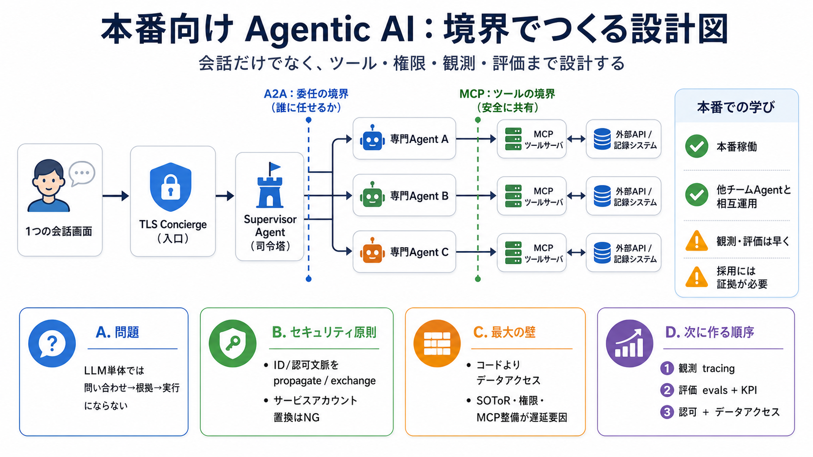

Agentic AI / TLS
02 / 14
本番運用の設計図
IBMの
エージェント
工場
ではなく
Technology Lifecycle Services（TLS）がゼロから本番向けに構築した「エージェントic AIプラットフォーム」の全体アーキテクチャ、設計判断、失敗からの学びを要点化します。
A2A（Agent2Agent）とMCP（Model Context Protocol）を「境界の設計」として扱う。
Problem
03 / 14
会話だけでは足りない
価値は
ツール
と
権限
LLM単体では「問い合わせ→根拠→実行」にならないため、ツール呼び出しが必須です。さらに複数エージェント連携では、誰が何を呼ぶかという境界が崩れると監査・セキュリティが破綻します。
必要条件
ツール呼び出し + 境界（分業）
企業要件
認証 / 監査 / データアクセス制御
Architecture
04 / 14
層で委任する
TLS
Supervisor
が分配
TLS Conciergeがユーザー意図を受け取り、Supervisor Agentが専門エージェントへA2Aで委任します。各エージェントは必要データをMCPツールサーバ経由で取得し、ユーザーは1つの会話画面に統合されます。
入口
TLS Concierge
司令塔
Supervisor Agent
実行
専門エージェント + MCP
Boundaries
05 / 14
二つの標準
A2A / MCP
役割分離
A2Aは「エージェント境界」（誰にどう委任するか）を標準化し、MCPは「ツール境界」（ツール提供口と安全な共有）を標準化します。技術選定ではなく、組織分断を境界で吸収する戦略です。
A2A（Agent2Agent）
委任の標準：AgentCardでスキル/要件を渡す
MCP（Model Context Protocol）
ツールの標準：ツールサーバで安全共有
Security
06 / 14
IDは消さない
認可文脈を
propagate
BFF→Supervisor→専門エージェント→MCPツールサーバ→外部APIまで、ユーザーID/認可トークンをチェーン全体で維持（propagate）または境界で交換（exchange）し、サービスアカウントに置き換えません。
やる
propagate / exchangeで整合を保つ
やらない
本人権限→サービスアカウントへ置換
文脈が失われると企業の統制モデルから外れ、後からの修正は難しい。
Bottleneck
07 / 14
最大の壁
コードより
データ工場
最大の制約は「エージェントコード」ではなく「データアクセス（データ工場）」でした。システム・オブ・レコード特定、アクセス可能性の確認、組織間の認証認可調整、MCPサーバ/ラッパ整備が遅延要因になります。
技術的に難しい点
SOToR（記録システム）と権限の整合
統合作業の遅れ
MCPサーバ/ラッパの整備
Observability
08 / 14
計測は早く
tracingだけで
足りない
分散トレースは導入した一方、統合タイミングが遅れました。観測だけでは改善の合否は保証できず、後から「どこが良くなったか」を確かめにくくなります。
必要
実行経路の把握
不足の例
統合が遅れ計測が空白に
帰結
根拠ある改善が止まる
Evals
09 / 14
改善の判断軸
evalsとKPIを
前倒し
評価（evals）は変更の良し悪しを判断する基盤ですが、整備が遅れ、微妙な誤りがユーザーに届くリスクが出ました。さらにKPIのベースライン不足により、価値を定量的に証明できません。
evalsが遅れると
誤りが再発しても気づけない可能性
KPIの欠如
投資判断・効果検証が困難
Evidence
10 / 14
本番で動いた
動く証拠は
相互運用
それでも記事では「実際に本番で動いた」ことと、「他チームが作ったエージェントとも相互運用できた」ことを成功として提示しています。成功の裏には、データ連携・権限・運用基盤がボトルネックだった事実があります。
成功面
本番稼働 + エージェント統合
裏側の現実
データアクセス/運用がボトルネック
Strategy
11 / 14
技術でも負ける
deep agent移行は
採用
で止まった
より深い推論パターン（deep agents）を提案しても、既存エージェント担当チームの優先度やスケジュールリスクで採用が進みませんでした。技術的優位は、evalによる説得材料がないと通りにくいという反省があります。
止まった理由
計画と採用の力学 + 説得材料不足
示唆
証拠（eval）がガバナンスを動かす
Takeaways
12 / 14
次に作る人へ
設計の順序は
観測→評価→アクセス
初期から「観測・評価・KPIベースライン設計」を用意し、ツールやデータアクセス統合作業を前倒し計画します。さらに認可文脈保持を設計原則として固定し、移行（採用）もオーナーとスケジュール確保の対象にします。
i
Observability（tracing）
ii
Evals（合否基準） + KPIベースライン
iii
Auth（propagate/exchange） + データアクセス整備
References
13 / 14
用語対応（要点）
A2A / MCP
を短く
この要約で使った中心概念の対応を、読み返し用に最小限で整理します（英語用語 + 短い日本語）。
A2A（Agent2Agent）
委任の標準：AgentCardで境界を定義
MCP（Model Context Protocol）
ツール提供の標準：ツールサーバで共有
propagate
認可文脈を維持（連鎖保持）
exchange
境界で交換して整合
原文は「IBM TLSのチーフアーキテクト記事」を前提に要点圧縮。
REFERENCES
14 / 14
References
No references found